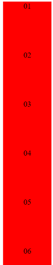
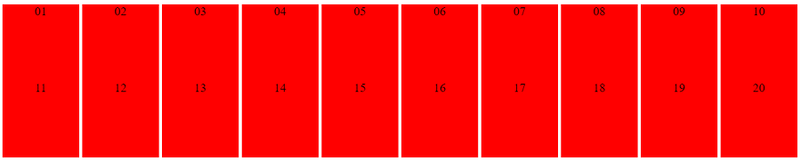

Opdracht 1
Ga na wat het effect is van het veranderen van de display property voor .area naar achtereenvolgens:
display:block;
De elementen worden nu onder elkaar weergegeven

display:inline;
display:inline-block;

Voor welke waarden worden de opgegeven width en height genegeerd?
Met display:inline worden de width en height waarden genegeerd.
Voor welke waarden worden de elementen als woorden op een pagina gezet?
De waarden worden met inline of inline-block naast elkaar gezet. Er kunnen meerdere inline elementen naast elkaar
staan.
Opdracht 2
Stel display:inline-block voor de elementen met class area, en bekijk opnieuw 'voorbeeld1.html'. Vanwaar
komen de lege ruimtes tussen blokken die naast elkaar staan? Resize je browservenster horizontaal en kijk hoe de
blokken netjes over de regels verdeeld worden.
inline block is een blokelement met inline eigenschappen
Blokelementen beginnen standaard een nieuwe regel en hebben witruimte rond en binnen het element
Bij inline staat alles in 1 rij.
Dus bij inline block staat alles op 1 rij met een enter die omgezet wordt naar een spatie.